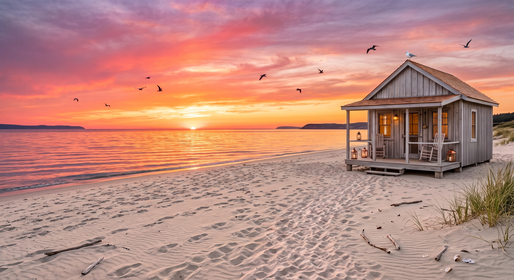

Día 5: Si fueras un lugar
Hola Mabe, la temática del día de hoy es un poco diferente a las demás. Hoy quiero tirarme a una onda más imaginativa: si fueses un lugar.
Mira, primeramente el clima. Aunque sé que eres fan del frío, tienes una personalidad muy cálida. Tampoco me imagino un calor asfixiante, siento que eres más un lugar templadito, fresco, con suaves brisas que no te hacen temblar de frío, sino de esas ricas que traen aire fresquito.
Me imagino ese lugar en la tarde, justo cuando el sol se comienza a meter en la puesta de sol. Y el lugar sí o sí tiene que ser una playita de aguas tranquilas. El inmenso mar representa lo magnífica que eres, pero es una playa en calma por tu misma personalidad, aunque eso no evita que en ciertas épocas del año esa playa tenga olas inmensas y poderosas.

De fondo siento que tendría una radio sonando con todas tus canciones favoritas y un DJ que de vez en cuando interrumpe la música para mandar saludos. Esa es la imagen que se me viene a la mente cuando pienso en qué tipo de lugar serías.
También habrían muchos animalitos JAJAJA, más que nada aves libres que pueden venir a descansar en una pequeña cabaña al filo de la playa... ¡y cierto, la playa tendría una zona de ejercicio JAJA! Como que ciertas partes de tu personalidad le darían vida a las actividades que se pueden hacer ahí. Por cierto, aunque la cabaña sea pequeña, por dentro tiene un cine propio JAJAJA, algo muy contrastante.
Además, para llegar a esa playa hay que caminar como una hora por un sendero escondido. No se llega fácil tampoco, pero el viaje vale totalmente la pena por el paisaje, por lo lindo que es y por la paz que transmite el lugar.
¿Que crees que es el dia de mañana? 💜